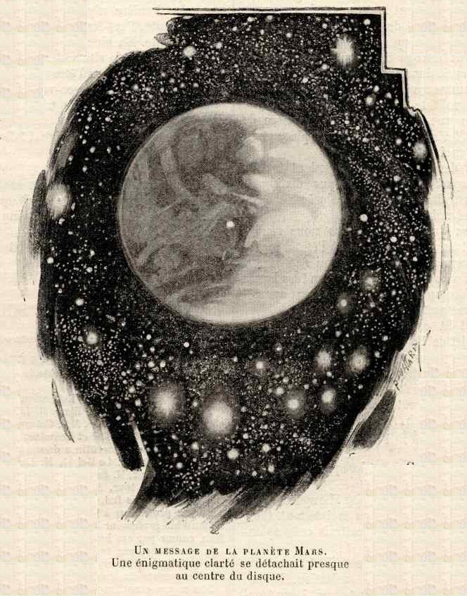
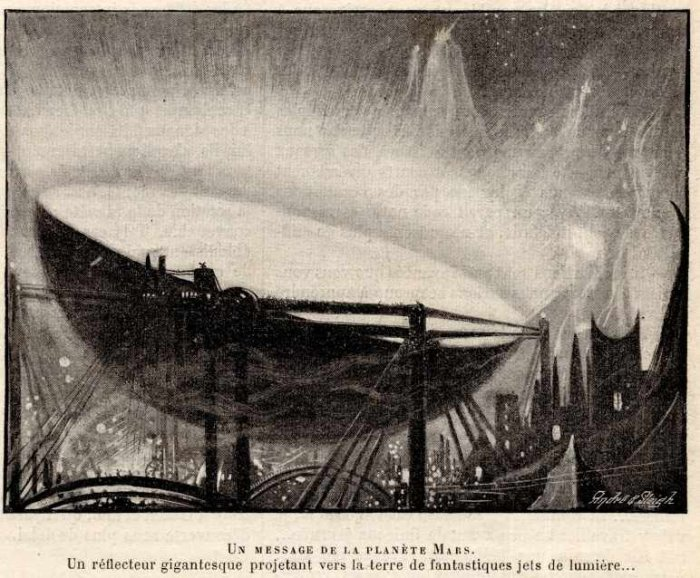

"La Science Illustrée" in "La recherche & ses ancêtres", GloubikCette nouvelle a été publiée en quatre parties dans les numéros de de La Science
Illustrée (quatre premiers fascicules du volume XXI de la revue)
L'été dernier, je parcourais, un soir, les dernières nouvelles du Temps, lorsque mes regards furent attirés
par le paragraphe suivant :
Une étrange lumière dans la planète Mars. Lundi soir, le docteur Krueger, directeur du bureau central
astronomique de Kiel, a télégraphié à tous ses correspondants :
Projection lumineuse dans région australe du terminateur de Mars observée par Javelle 28 juillet, 16 heures.
- Perrolin.
Le "terminateur" est la zone de pénombre séparant le jour de la nuit.
Cette nouvelle était, pour moi, doublement intéressante. Depuis longtemps déjà l'étude de l'astronomie m'avait transporté en imagination
dans
l'univers merveilleux qui gravite en dehors de notre petit globe. En second lieu, j'avais, quelques années auparavant,
tenté, avec un vieil astronome, une expérience inoubliable de communication
interastrale.
Cet homme extraordinaire, vivait comme un reclus dans son observatoire, avait, ou du moine croyait avoir
ouvert, une correspondance avec les habitants de la planète Mars,
au moyen de jets puissants de lumière électrique ; interrompus par intermittences comme les signaux de la télégraphie
optique. Je l'avais considéré souvent comme un monomane ; mais, qui sait ? Peut-être n'était-il pas si fou, après
tout.
Malgré moi, j'ouvris mes livres, cherchant, parmi les observations antérieures, quelque fait de nature à expliquer
l'étrange lumière.
Ne trouvant rien, je résolus de sortir et d'aller consulter mon ami, le professeur Gazen, l'astronome bien connu,
qui s'est particulièrement signalé par une série de splendides recherches spectroscopiques sur la constitution du
soleil et d'autres corps célestes.
La nuit était d'une clarté limpide. Pas un nuage ne voilait l'immensité d'un bleu sombre. Les astres
resplendissaient dans la profondeur des cieux, comme des diamants tombés de la ceinture d'argent de la Voie Lactée. La
constellation d'Orion brillait avec un éclat remarquable dans le ciel oriental et dans le sud étincelait Sirius comme
une gemme vivante.
? Je vous dérange sans doute ! lui dis-je tandis que nous échangions une poignée de main.
Je cherchai des yeux la planète Mars et
bientôt je l'aperçus, du côté du nord, comme une grande étoile rouge, entourée de constellations albescentes.
Je trouvai à son observatoire le professeur Gazen plongé dans des calculs.
- Je vous dérange sans doute ! lui dis-je tandis que nous échangions une poignée de main. Une aussi belle nuit doit
être favorable à vos travaux astronomiques.
- Vous ne me dérangez nullement, répondit-il cordialement. J'observe une nébuleuse, mais elle restera encore
longtemps au-dessus de l'horizon.
- Eh bien !. .. Qu'est-ce que cette mystérieuse lumière de la planète Mars ?... L'avez-vous vue !
- Je n'ai rien vu ! dit-il. Et pourtant j'ai longuement observé cette planète la nuit dernière.
- Mais, ... croyez-vous qu'une lueur de ce genre ait été réellement vue ?
- Oh, certainement. L'observatoire de Nice, dont M. Perrotin est le directeur, possède l'un des meilleurs
télescopes qui existent et M. Javelle est bien connu par le soin qu'il apporte à ses observations.
- Et comment l'expliquez-vous ?
- La lumière n'est pas sur le disque même de la planète, répondit Gazen, aussi étais-je porté tout d'abord à
l'attribuer à une petite comète. Elle peut être due aussi à une aurore boréale de la planète Mars, comme un
collaborateur de la Science Illustrée l'a suggéré, ou à une rangée de montagnes neigeuses, ou encore à un
nuage brillant, réfléchissant les rayons du soleil levant.
- Et quelle est, de ces diverses hypothèses, celle qui vous paraît la plus vraisemblable ?
- C'est celle qui attribue la lueur à des pics de montagnes élevés réfléchissant les rayons solaires.
- Ne pourrait-ce être l'éclairage nocturne d'une ville, - ou une puissante projection lumineuse, ... en un mot, un
signal ?
- Oh, non, mon cher, s'écria l'astronome avec un sourire d'incrédulité. L'idée d'une correspondance a germé dans
certains esprits il y a environ 2 ans, lorsque Mars fut en "opposition" et près de la Terre. Vous vous rappelez peut-être le projet qui fut
fait de disposer l'éclairage de Paris de façon à attirer l'attention des Martiens ?
- Non ... Mais je crois vous avoir parlé de la singulière expérience que je fis, il y a quelque 5 ou 6 ans, avec un
vieil astronome qui pensait avoir établi une correspondance optique avec Mars.
- Oui, je m'en souviens, en effet. Ce pauvre vieillard était fou. Comme l'astronome de Rasselas, il
s'était si longtemps nourri dans la solitude de son idée de visionnaire, qu'il avait fini par la prendre pour une
réalité.
- Mais ne pourrait-il pas y avoir une part de vérité dans cette imagination ? Peut-être, ce "visionnaire" était-il
seulement en avance sur son temps.
Gazen secoua la tête.
- Voyez-vous, reprit-il, Mars est une planète beaucoup
plus ancienne que la nôtre. En hiver, ses glaces arctiques s'étendent jusqu'au 40ème degré de latitude et
son climat doit être très froid. Si des êtres humains ont jamais vécu à sa surface ils doivent avoir disparu depuis
longtemps, ou se trouver dans les mêmes conditions d'habitat que nos Esquimaux.
- Mais le climat ne peut-il être adouci par des conditions continentales et océaniques qui nous sont inconnues ?
Certainement, au printemps, on peut voir la calotte polaire de Mars s'étendre jusqu'au quarantième degré de
latitude. Toutefois, lorsque l'été commence, elle se met à diminuer, et dès les premiers jours de l'automne, il n'en
reste plus que quelques fragments. En 1894, ceux-ci ont même disparu tout à
fait.
- L'atmosphère de Mars est aussi raréfiée que celle
des montagnes de notre globe à une hauteur de 8000 m et un organisme à sang chaud, comme l'homme, ne pourrait y
vivre.
- Comme l'homme, oui ! répondis-je. Mais l'homme est organisé pour son milieu. Nous sommes trop portés à rapporter
toutes choses à celles que nous observons chaque jour. Comment pouvons-nous prétendre limiter le "potentiel" de la
vie d'après ce que nous connaissons de notre planète ?
- D'ailleurs, continua Gazen sans même faire attention à ma réflexion, - le projet de votre vieil astronome
consistant à faire des signaux au moyen de puissants jets lumineux était tout il fait impraticable. Il n'existe pas
de lumière artificielle capable d'arriver jusqu'à Mars.
Songez à l'immense distance qui sépare les 2 planètes, et aux 2 atmosphères absorbantes à traverser. Cet homme était
fou !
- J'ai lu, l'autre jour, qu'il existe en Amérique un phare électrique qui peut être aperçu à 150 milles, à travers
les parties les plus basses de notre atmosphère. Une pareille lumière, convenablement dirigée, pourrait être vue de
la planète Mars, et rien ne s'oppose à ce que les
Martiens en aient inventé une plus puissante encore.
- Et s'ils l'ont fait,. dit Gazen en riant, l'idée qu'ils ont eu de nous faire des signaux juste au moment où il
nous est possible de leur répondre, est tout simplement stupéfiante.
- Je ne vois rien d'extraordinaire dans cette coïncidence. 2 esprits conçoivent souvent la mèrne idée en même
temps. Pourquoi pas ceux de 2 planètes différentes, si l'heure propice est arrivée ? Certainement, il n'y a qu'un
seul et même Esprit qui inspire l'univers entier. D'ailleurs, les Martiens peuvent nous avoir fait des signaux
pendant des siècles, de temps en temps, sans que nous nous en soyons aperçus ... Peut-être, en ce moment même,
perdons-nous un temps précieux, pendant qu'ils s'évertuent à attirer notre attention. Voulez-vous voir ?
- Oui, si cela peut vous faire plaisir. Mais je doute que nous apercevions la moindre projection lumineuse, -
humaine on non.
? Je pris sa place à l'oculaire...
- Nous verrons du moins la surface de Mars et cela constitue déjà un spectacle admirable. Il
me semble que la contemplation des corps célestes à travers un bon télescope, devrait faire partie d'une éducation
libérale complète, au même titre qu'un voyage autour du monde. Et pourtant, autant sont nombreux ceux qui vont
errant ça et là sur la terre, à la recherche de nouveaux sites, à grand'peine et à grands frais, autant sont rares
ceux qui songent au sublime spectacle du ciel que l'on peut contempler sans s'éloigner de chez soi ! Un regard en
ces mondes lointains a le pouvoir d'élever et de purifier nos âmes, comme un hymne sacré, une noble peinture, ou les
vers des grands poètes. Cela fait toujours du bien.
Le professeur Gazen tourna silencieusement son grand télescope réfracteur dans la direction de Mars, et observa attentivement à travers le large tube
pendant quelques mn.
- Il n'y a pas de lumière ? demandai-je.
- Aucune, répondit-il en secouant la tête. Voyez vous-même.
Je pris sa place à l'oculaire et ne pus m'empêcher de tressaillir en voyant la petite étoile cuivrée que j'avais
aperçue une demi-heure auparavant, devenue en apparence toute proche et transformée en un vaste globe. Elle
ressemblait au croissant lunaire, car une partie considérable de son disque était illuminée par le soleil.
Une tache blanchâtre indiquait la place d'un de ses pôles, et le reste de sa surface visible était divisé en parties
alternativement rougeâtres ou verdâtres. Fasciné par le spectacle de ce monde vivant, plein de clarté et poursuivant
sa course perpétuelle dans l'insondable éther, j'oubliai ma question et une religieuse émotion emplit tout mon être,
comme sous le dôme d'une vaste cathédrale.
- Eh bien ! Que faites-vous ?
Cette voix me rappela à moi-même et je cornmençai à inspecter minutieusement la frange sombre du "terminateur" pour
y découvrir le plus faible rayon de lumière, - mais en vain.
- Je ne vois aucune projection lumineuse ; mais quel magnifique spectacle dans le télescope !
- C'est certain ! convint le professeur. Quoiqu'il ne soit pas toujours facile d'observer la planète Mars, nous la connaissons mieux que les autres planètes,
et au moins aussi bien que la lune. Ses accidents topographiques ont été dessinés avec soin comme ceux de la lune,
et ont reçu les noms d'astronomes célèbres.
- Vous compris, j'espère.
- Non ; je n'ai pas cet honneur. Il est vrai que je connais quelqu'un, enthousiaste amateur d'astronomie, qui a
baptisé une quantité de plaines et de montagnes de la lune des noms de ses amis et connaissances, le
mien compris : le cratère de "Durand", le gouffre de "Dubois", la baie de "Martin", et ainsi de suite. Mais j'ai le
regret de dire que les savants autorisés ont refusé de sanctionner cette nomenclature.
- Je présume que la tache brillante de l'hémisphère sud est un des caps de glace polaires, dis-je, les yeux
toujours fixés sur la planète.
- Oui, répondit le professeur, et on les voit très distinctement avancer en hiver et reculer en été.
« Les parties d'un jaune rougeâtre sont probablement des continents au sol ocreux, et non, comme certains
l'ont pensé, d'une végétation qui revêtirait cette même couleur.
« Les parties d'un gris verdâtre sont peut-être des mers et des lacs. Dans ce cas, la terre et l'eau seraient
plus également répartis sur Mars que sur la terre, - fait qui tendrait à égaliser les climats.
« Mais une autre hypothèse, bien ingénieuse, vient d'être formulée par l'américain Percival Lowell, qui s'est tout particulièrement adonné à l'étude
de Mars, et qui a publié récemment, sur cette planète,
un livre des plus remarquables. »
Vivement intéressé par ce début, je quittai un instant l'oculaire pour écouter le professeur qui reprit :
« Le 3 juin 1894, époque qui répond au 1er mai de l'année martiale, Lowell mesura la calotte polaire australe, qui s'étendait sur
environ 55° de latitude et était en train de fondre ; des centaines de kilomètres carrés disparaissaient tous les
jours. Or, partout où s'opérait la perte de surface blanche et brillante apparaissait une bande sombre,
vraisemblablement produite par la fusion du bord des glaciers polaires. Cette bande suivait le retrait de la calotte
polaire et diminuait de largeur avec la dimension de la calotte. Au mois d'août suivant, ce n'était plus qu'une
ligne fine à peine perceptible autour des portions de la calotte de glace qui subsistaient encore. Enfin, le 13
octobre, lorsque la neige eut disparu entièrement, l'endroit qu'elle avait finalement occupé avec sa bordure devnt
méconnaissable et prit la couleur jaune.
« Ceci une fois établi par l'observation télescopique, que peut bien être cette bordure foncée, si ce n'est
de l'eau ? Elle en a la couleur, elle suit pas à pas la fusion de la calotte, et elle disparaît avec elle.
« M. Lowell conclut que l'eau, très rare à la surface de Mars, n'y existe à l'état liquide que grâce à la fusion
des glaciers polaires.
« L'observateur américain rattache cette hypothèse à l'explication des fameux canaux de Schiaparelli, dont
vous avez certainement entendu parler.
- Oui, certes ! ce réseau de lignes régulières dont certaines atteignent jusqu'à 4 000 et 4 800 kilomètres de
longueur, mais dont la longueur moyenne est de 2 400 kilomètres environ.
- Eh bien ! M. Lowell est d'avis que ce système de lignes si
droites, si symétriques, leur irradiation de points spéciaux, la manière dont elles mettent en communication
certains points avec d'autres, vers lesquels convergent à leur tour plusieurs autres lignes, tout cela ne saurait
provenir que d'une œuvre artificielle. D'après lui, ces lignes correspondent au parcours de canaux creusés
dans le but de porter au loin la fertilité dans des endroits privés d'humidité.
- Et il le prouve ?
- Voici comment il prétend le prouver :
« Deux faits sont incontestables, puisqu'ils peuvent être vérifiés au télescope : c'est que ces «
canaux» sont visibles à certaines saisons, et qu'à certaines autres (toujours les mêmes), ils s'évanouissent ;
ce qui n'est pas la conséquence de l'augmentation de distance, car c'est lorsque Mars est plus rapproché de nous que certains canaux ne
sont pas visibles, tandis qu'ils le deviennent lorsque la planète s'est éloignée. On ne peut davantage expliquer
cette disparition des canaux par l'hypothèse de nuages ou de brouillards, qui les cacheraient à notre vue, car, au
même moment, la ligne terminale des régions sombres est aussi nettement tranchée que lorsque les canaux sont
parfaitement visibles. Les canaux deviennent donc visibles, augmentent ou diminuent pour des raisons qui leur sont
propres.
« Mais si leur apparition est temporaire, leur place ne varie pas. De plus, une observation patiente montre
que, d'invisibles qu'ils étaient, ils deviennent graduellement perceptibles. On les voit en quelque sorte croître et
décroître à des saisons déterminées. Ce visible développement suit la fonte des glaces polaires, et il est à
remarquer qu'aucun canal ne devient visible tant que la fonte des glaces n'a pas progressé sensiblement. Ceux qui
sont le plus rapprochés de la calotte polaire apparaissent les premiers ; ils deviennent dans la suite de plus en
plus distincts et prennent avec le temps une couleur plus foncée.
« L'explication qui se présente le plus naturellement à l'esprit est qu'il doit y avoir écoulement d'eau du
pôle à l'équateur ; mais elle n'est pas suffisante. En effet, il faut attendre quelques mois pour que les canaux
deviennent visibles à l'équateur : il ne faut pas autant de temps pour que l'eau y arrive. D'ailleurs, pour être
perceptibles, il faudrait que ces canaux eussent au moins un degré de large, ce qui peut paraître énorme pour des
canaux artificiels.
« Aussi M. Lowell attribue-t-il les apparences observées, à
la végétation qui se développe sur les rives des canaux quelque temps après l'imbibition du sol par l'eau qu'ils ont
amenée, ce qui explique le phénomène de leur apparition progressive et de leur changement d'aspect.
Une énigmatique clarté se détachait presque au centre du disque.

« Le changement d'aspect des canaux consiste, non en ce qu'ils paraissent plus larges, mais en ce qu'ils
deviennent de plus en plus foncés et par conséquent distincts. S'il y avait à la surface de Mars des montagnes élévées, elles s'opposeraient à la
rectitude des canaux ; mais l'observation nous apprend que cette planète est relativement unie. Ces canaux sont
visibles aussi bien dans les régions rougeâtres que dans celles qui sont verdâtres, parce qu'ils y développent ou y
augmentent la végétation par l'humidité qu'ils apportent. Ce sont donc des canaux d'irrigation qui, à leur point de
jonction, donnent naissance à de véritables oasis.
« De tout ce qui précède, M. Lowell conclut que l'eau étant
devenue rare sur la planète Mars, le problème le plus
important pour ses habitants doit être de s'en procurer. Ce qui augmente la probabilité d'une cause intelligente
pour ces canaux, c'est qu'on en aperçoit de doubles, c'est-àdire formant deux lignes parallèles tout le long de leur
parcours : aucun dessinateur ne pourrait les tracer plus parfaitement parallèles. Leur écartement varie de 4 1/4 à 6
degrés, et la végétation que chacun d'eux développe sur son parcours paraît avoir un degré de large.
« Dans cette hypothèse, les vastes espaces rougeâtres seraient de vastes plaines arides ou désertes ; les
taches systématiques que l'on considérait comme des lacs doivent être les aires de verdure, de véritables oasis qui
se forment, comme le montre leur changement de couleur et de dimension, au point de rencontre de plusieurs
canaux.
- Mais alors, m'écriai-je, les Martiens, capables de construire un aussi vaste système d'irrigation, disposent de
moyens d'action qui nous sont inconnus. Leur science est plus avancée que la nôtre, et rien n'empêche ...
- Ne vous hâtez pas de conclure, dit Gazen en souriant. Tout cela n'est qu'une hypothèse, - fort ingénieuse, je
l'avoue, - mais, en somme, une hypothèse ... Le milieu naturel de la surface de Mars diffère sensiblement du nôtre, et les apparences
qu'il présente ne sauraient être toutes expliquées suivant nos vues terrestres. Faisons des suppositions, tâchons de
les vérifier, mais n'affirmons rien.
Tandis qu'il parlait, l'esprit surexcité malgré moi par la séduisante hypothèse de Lowell, j'avais repris ma place au télescope.
était-ce une illusion de mon imagination ? Etait-ce une réalité ?.. Mon attention fut soudainement arrêtée par un
point lumineux extrêmement vif qui apparut sur le côté sombre du terminateur au sud de l'équateur.
- Oh ! m'écriai-je involontairement. Voilà la lumière !
- Vraiment ! répondit Gazen d'un ton de surprise mêlée de doute. En êtes-vous bien sûr ? - Tout à fait. Voilà une
lumière bien distincte sur l'une des parties rougeâtres.
- Laissez-moi voir ! fit-il a vec vivacité.
Je lui cédai ma place.
- C'est vrai, déclara-t-il après un moment d' observation. Je suppose que cette lumière nous avait été jusqu à
présent cachée par un nuage.
Nous continuâmes à observer silencieusement et à tour de rôle l'étrange clarté.
Cela ne peut pas être la lumière que Javelle a aperçue, dit enfin Gazen. Elle était dans la partie dénommée
Hellas.
- Pour faire des signaux, murmurai-je, revenant à mon idée fixe, les Martiens doivent probablement employer tout un
système de lumières. Puisqu'ils ont un réseau de canaux, rien n'empêche qu'ils aient un réseau télégraphique pour
combiner leurs tentatives sur les différents points de la planète.
Le professeur se replaça à l'oculaire, et j'attendis avec un vif intérêt le résultat de ses observations.
- Elle est aussi stable que possible, dit-il.
- Cette stabilité donne à réfléchir, répondis-je. Si elle était variable on pourrait plutôt la prendre pour un
signal.
- Mais rien n'indiquerait que ce signal fût nécessairement destiné aux habitants de la terre, dit Gazon avec une
gravité moqueuse. Cela pourrait être un phare flottant, ou un message de nuit pour les manœuvres d'automne des
Martiens qui sont, sans nul doute, très belliqueux.
- Sérieusement, que pensez-vous de cela ? demandai-je.
- J'avoue que c'est un mystère pour moi, répondit-il en réfléchissant profondément.
Puis soudain, comme frappé d'une pensée subite, il ajouta :
- Je serais bien étonné si le spectroscope ne nous donnait pas quelque éclaircissement à cet égard.
Tandis qu'il préparait cet instrument, je me remis au télescope et j'observai de nouveau l'énigmatique clarté qui se
détachait presque au centre du disque.
Gazen fixa au télescope un magnifique spectroscope, qui lui servait dans ses recherches sur les nébuleuses, et
recommença ses observations.
- Vraiment, voilà la chose la plus remarquable que j'aie jamais vue dans ma longue carrière de spectrocopiste,
s'écria-t-il en quittant sa place et en s'avançant vers moi.
- Qu'est-ce ? demandai-je, en regardant à mon tour dans le spectroscope, où je pus distinguer quelques faibles
traits de lumière colorée se détachant sur un fond noir.
- Vous savez que nous pouvons nous rendre compte de la nature d'une substance à l'état d'incandescence en
décomposant la lumière qui s'en dégage dans le prisme d'un spectroscope. Eh bien ! ces lignes brillantes et
différemment colorées que vous apercevez constituent le spectre d'un gaz lumineux.
- Vraiment ! Et cela vous donne-t-il quelque indication au sujet de l'origine de la clarté que nous a percevons
?
- Elle peut être électrique, - par exemple, une aurore. Ce peut être une éruption volcanique, ou un lac de feu
semblable au cratère du Kilanef, le fameux volcan des îles Sandwich. A vrai dire, je n'en sais rien. Laissez-moi
voir si je puis identifier les raies brillantes du spectre.
Je lui cédai le spectroscope, et lorsqu'il eut observé attentivement il s'écria :
- Par le ciel ! C'est extraordinaire ! Le spectre s 'est modifié. Eureka ! Je le reconnais maintenant. C'est le
spectre du thallium. Je reconnaîtrais cette splendide ligne verte entre mille.
- Le thallium ! m'écriai-je, émerveillé à mon tour.
- Oui, répondit Gazen avec exaltation. Prenez note de l'observation et aussi du temps. Vous trouverez un carnet
disposé exprès sur mon bureau.
Je fis ce qu'il demandait, et attendis ses nouvelles observations. Le silence était si grand que je pouvais
parfaitement entendre le tic tac de ma montre placée devant moi sur le bureau. Au bout de quelques minutes le
professeur cria :
- Il a encore changé : prenez une autre note.
- Qu'est-ce maintenant ?
- Le sodium. Ces deux bandes jaunes ne peuvent être confondues avec aucune autre.
Un profond silence régna comme auparavant.
- Nouveau changement ! s'écria le professeur très excité. J'aperçois maintenant une double ligne bleue. Qu'est-ce
que cela peut bien être ? Je crois que c'est l'iridium.
Une autre longue pause suivit cette indication.
- Les voilà disparues ! murmura Gazen, Une ligne rouge et une ligne jaune ont pris leur place. C'est le lithium ...
Tiens ! Tout est redevenu noir !
- Qu'arrive-t-il donc ?
- Tout a disparu.
En disant ces mots, il détacha le spectroscope du télescope et observa anxieusement la planète.
- La lumière n'y est plus, ajouta-t-il au bout d'une minute. Peut-être un autre nuage passe-t-il au-dessus d'elle.
Eh bien, nous attendrons. En attendant, examinons la situation. Il me semble que nous avons quelques raisons d'être
satisfaits de notre travail de cette nuit. Qu'en pensez-vous ?
C'est avec une attitude triomphale qu'il s'arrêta devant moi.
- Je crois que c'est un signal ! dis-je avec conviction.
- Pourquoi ?
Un réflecteur gigantesque projetant vers la terre de fantastiques jets de lumière...

- Pourquoi ces changements seraient-ils si réguliers ? J'ai mesuré la durée de chaque spectre et j'ai trouvé qu'il
persiste environ cinq minutes avant qu'un autre prenne sa place.
Le professeur resta pensif et silencieux. Je poursuivis :
- N'est-ce pas par la lumière qui nous vient d'eux que nous avons acquis toutes nos connaissances relatives à la
constitution des corps célestes ? Un rayon de l'étoile la plus lointaine apporte avec lui un secret message pour
celui qui sait le lire ! Eh bien ! les Martiens auront naturellement eu recours au même moyen de communication comme
étant le plus simple et le plus praticable. En produisant une puissante lumière ils peuvent espérer que notre
attention sera attirée sur leur planète, et en lui faisant produire des spectres caractéristiques, aisément
reconnaissables et modifiés à intervalles réguliers, ils veulent distinguer leur lumière de toute autre, et nous
montrer qu'elle a une origine intelligente.
- Et ensuite ?
- Ensuite, nous savons que les Martiens ont une civilisation au moins aussi élevée que la nôtre. Dans ma pensée,
c'est une grande découverte - la plus grande depuis que le monde existe.
- Mais de peu d'utilité aussi bien pour nous que pour les Martiens.
- A ce point de vue, un grand nombre de nos découvertes, particulièrement en astronomie, ne sont guère utiles. Je
suppose que vous trouviez la composition chimique de la nébuleuse que vous étiez en train d'étudier, ... cela
fera-t-il baisser le prix du pain ? Non ; mais cela nous intéressera et nous instruira. Si les Martiens peuvent nous
apprendre comment Mars est constitué, et que nous
puissions leur rendre la pareille en ce qui concerne la terre, ce sera certainement un mutuel service que se
rendront les deux planètes.
- Mais la correspondance ne pourra aller plus loin.
- Je n'en suis pas si certain que cela.
- Mon cher ami ! Comment sur la terre pouvons-nous comprendre ce que disent les Martiens, et comment sur Mars pourrait-on comprendre ce que nous disons ? Nous
n'avons pas de code commun.
- C'est vrai ... Mais les corps chimiques ont certaines propriétés bien définies, n'est-ce pas ?
- Oui. Chacun d'eux possède même quelque particularité qui le distingue nettement de tous les autres. Par exemple,
ceux-là même qui se ressemblent par la couleur ou par la dureté, diffèrent par le poids.
- Précisément. Eh bien ! ne pouvons-nous employer leur spectre à désigner justement ces qualités particulières,
à en exprimer l'idée ? En un mot, les Martiens ne peuvent-ils nous parler par spectregrammes ?
- Je vois où vous en voulez venir, dit le professeur Gazen. Et, maintenant j'y pense, tous les spectres que nous
avons observés ce soir appartiennent au groupe des métaux alcalins et des terres alcalines, qui ont justement des
propriétés très caractéristiques.
- Tout d'abord, je suppose que les Martiens aient voulu seulement attirer notre attention par un spectre
éclatant.
- Le lithium est le métal le plus nouveau que nous connaissions.
- Bien ! Nous pouvons en tirer l'idée de clarté.
- Le sodium, continua le professeur, est un métal qui a une telle affinité pour l'oxygène qu'il brûle dans l'eau.
Le manganèse, qui appartient au groupe du fer, est tellement dur qu'il raie le verre, et comme le fer, il est
magnétique. Le cuivre est rouge ...
- Les signaux relatifs aux couleurs peuvent être tirés directement des spectres.
- Le mercure ou vif-argent est fluide aux températures ordinaires, et peut nous donner l'idée de mouvement,
d'animation et même de vie.
- Ayant obtenu certaines idées fondamentales, continuai-je, en les combinant nous arriverons à d'autres conceptions
différentes des premières. Nous pourrons établir tout un langage idéographique par signes, - ces signes étant les
spectres lumineux des différents corps chimiques.
« Les chiffres peuvent être transmis par simples occultations de la lumière. Puis des spectres nous pouvons
passer par une pente aisée à des signaux équivalents - éclairs longs et courts diversement combinés, obtenus
également par des occultations lumineuses. Avec un pareil code notre correspondance devient indéfinie, et ne
présente plus de difficultés.
- Si les Martiens sont aussi avancés que vous vous plaisez à le croire, nous aurions beaucoup à apprendre
d'eux.
- J'espère que nous le pourrons, et je suis sûr que le monde ne pourrait que gagner au moindre éclaircissement
supérieur sur quelques points.
- En tout cas, nous poursuivrons assidûment nos observations, dit le professeur en jetant un nouveau regard au
télescope.
Puis il ajouta :
- Pour le moment, les philosophes martiens ne paraissent pas vouloir pousser plus loin leurs expériences ... Et
comme la nébuleuse est toujours là, je vais y travailler un peu avant de finir ma journée ... S'il fait demain une
belle nuit, revenez me voir. Nous continuerons nos observations ; mais, croyez-moi, il vaut mieux n'en rien dire
encore.
En rentrant chez moi, je contemplai encore la rutilante planète, comme je l'avais fait en venant ; mais, dans mon cœur
s'agitaient des sentiments bien différents. La distance et l'isolement qui me séparaient d'elle me semblaient avoir
disparu depuis lors, et au lieu d'une étoile froide et étrangère, je voyais un monde familier, une planète amie, un
compagnon de la terre dans l'éternelle solitude de l'univers.
Dans mes rêves, je me trouvai transporté à la surface même de Mars, où une armée de savants manœuvraient, à l'aide
de merveilleuses machines, un réflecteur gigantesque projetant vers la terre de fantastiques jets de lumière.
Le matin venu, je courus acheter le livre si attachant de M. Percival
Lowell, que m'avait signalé le professeur Gazen, et jusqu'au soir je restai plongé dans sa lecture.
Tout me confirmait dans mes idées relatives aux Martiens.
La planète Mars est plus vieille que la terre. La vie a
dû s'y montrer plus tôt et par conséquent évoluer pendant plus longtemps.
Si les canaux de Mars sont l'œuvre d'êtres
animés, ceux-ci doivent être actuellement doués d'une intelligence plus affinée que la nôtre et il y a peut-être bien
longtemps que nos chemins de fer, nos télégraphes, nos téléphones, nos systèmes économiques et politiques sont
dépassés.
Pour avoir pu établir un système d'irrigation qui embrasse toute la planète, il leur a fallu un état social où les
partis politiques ne s'entre-déchirent plus et où les différends internationaux se règlent autrement que par le droit
du plus fort.
Quant aux jets de lumière soudains et éphémères que l'on a observés partant de l'endroit où la calotte polaire a
perdu son éclatante blancheur, M. Percival Lowell croit que c'est
bien à tort qu'on les a attribués à des signaux faits par les habitants de Mars. D'après lui, ils s'expliquent aisément par la
réverbération vers l'est de fragments de glaciers restés attachés au versant des montagnes, se produisant au moment où
la rotation de la planète donne à ces versants l'angle convenable. Tels ces faisceaux lumineux qui nous éblouissent
quelquefois lorsque les carreaux de vitres de quelque maison renvoient dans nos yeux les rayons du soleil couchant.
Mais les spectres lumineux ?
Voilà ce que M. Percival Lowell n'a ni vu, ni expliqué, et ce que
je comptais bien parvenir à élucider avec l'aide du professeur Gazen.
Malheureusement pour nos projets, le ciel fut couvert le jour suivant, et il est resté depuis lors plus ou moins
défavorable pour l'observation de Mars. Etant données ces
circonstances, et dans l'espoir que quelque autre astronome, sous un climat plus limpide, pourra poursuivre ces
recherches, nous avons pensé, le professeur Gazen et moi, qu'il valait mieux publier notre découverte sans plus de
délai.